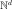
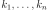

OrthogonalProductPolynomialFactory¶
- class OrthogonalProductPolynomialFactory(*args)¶
Base class for orthogonal multivariate polynomials.
- Available constructors:
OrthogonalProductPolynomialFactory(polynomials)
OrthogonalProductPolynomialFactory(polynomials, enumerateFunction)
OrthogonalProductPolynomialFactory(marginals)
- Parameters
- polynomialssequence of
OrthogonalUniVariatePolynomialFamily List of orthogonal univariate polynomials factories with the same dimension as the orthogonal basis.
- enumerateFunction
EnumerateFunction Associates to an integer its multi-index image in the  dimension, which is the dimension of the basis. This multi-index represents the collection of degrees of the univariate polynomials.
- marginalssequence of
Distribution List of physical space marginals.
- polynomialssequence of
Notes
OrthogonalProductPolynomialFactory is a particular case of implementation of the
OrthogonalBasisin the case of polynomial chaos expansion. It provides to the OrthogonalBasis the persistent types of the univariate orthogonal polynomials (e.g. Hermite, Legendre, Laguerre and Jacobi) needed to determine the distribution measure of projection of the input variable. Let’s note that the exact hessian and gradient have been implemented for the product of polynomials. To facilitate the construction of the basis it is recommanded to use the classStandardDistributionPolynomialFactory.Examples
>>> import openturns as ot >>> # Define the model >>> myModel = ot.SymbolicFunction(['x1','x2','x3'], ['1+x1*x2 + 2*x3^2']) >>> # Create a distribution of dimension 3 >>> Xdist = ot.ComposedDistribution([ot.Normal(), ot.Uniform(), ot.Gamma(2.75, 1.0)]) >>> # Construct the multivariate orthonormal basis >>> polyColl = [ot.HermiteFactory(), ot.LegendreFactory(), ot.LaguerreFactory(2.75)] >>> enumerateFunction = ot.LinearEnumerateFunction(3) >>> productBasis = ot.OrthogonalProductPolynomialFactory(polyColl, enumerateFunction)
>>> # Easier way to construct the same multivariate orthonormal basis >>> marginals = [Xdist.getMarginal(i) for i in range(Xdist.getDimension())] >>> productBasis = ot.OrthogonalProductPolynomialFactory(marginals)
Methods
build(*args)Get the term of the basis collection at a given index or multi-indices.
Accessor to the object's name.
Get the dimension of the Basis.
Return the enumerate function.
getId()Accessor to the object's id.
Get the measure upon which the basis is orthogonal.
getName()Accessor to the object's name.
getNodesAndWeights(degrees)Get the nodes and the weights.
Get the collection of univariate orthogonal polynomial families.
Accessor to the object's shadowed id.
getSize()Get the size of the Basis.
getSubBasis(indices)Get a sub-basis of the Basis.
Accessor to the object's visibility state.
hasName()Test if the object is named.
Test if the object has a distinguishable name.
isFinite()Tell whether the basis is finite.
Tell whether the basis is orthogonal.
setName(name)Accessor to the object's name.
setShadowedId(id)Accessor to the object's shadowed id.
setVisibility(visible)Accessor to the object's visibility state.
add
- __init__(*args)¶
- build(*args)¶
Get the term of the basis collection at a given index or multi-indices.
- Parameters
- indexint
Indicates the term of the basis which must be constructed. In other words, index is used by a bijection from
 to
(with
to
(with  the dimension of the basis). The bijection is detailed in
the dimension of the basis). The bijection is detailed in
EnumerateFunction.- indicessequence of int
Indicates the term of the basis which must be constructed. In other words, indices is used by a bijection from to
(with the dimension of the basis). The bijection is the inverse of
EnumerateFunction.
- Returns
- function
Function The term of the basis collection at the index index or the inverse of indices.
- function
Examples
>>> import openturns as ot >>> # Create an orthogonal basis >>> polynomialCollection = [ot.LegendreFactory(), ot.LaguerreFactory(), ot.HermiteFactory()] >>> productBasis = ot.OrthogonalBasis(ot.OrthogonalProductPolynomialFactory(polynomialCollection)) >>> termBasis = productBasis.build(4) >>> print(termBasis.getEvaluation()) -1.11803 + 3.3541 * x0^2 >>> termBasis = productBasis.build(5) >>> print(termBasis.getEvaluation()) (1.73205 * x0) * (-1 + x1) >>> termBasis2 = productBasis.build([1,1,0]) >>> print(termBasis2.getEvaluation()) (1.73205 * x0) * (-1 + x1)
- getClassName()¶
Accessor to the object’s name.
- Returns
- class_namestr
The object class name (object.__class__.__name__).
- getDimension()¶
Get the dimension of the Basis.
- Returns
- dimensionint
Dimension of the Basis.
- getEnumerateFunction()¶
Return the enumerate function.
- Returns
- enumerateFunction
EnumerateFunction Enumerate function that translates unidimensional indices into multidimensional indices.
- enumerateFunction
- getId()¶
Accessor to the object’s id.
- Returns
- idint
Internal unique identifier.
- getMeasure()¶
Get the measure upon which the basis is orthogonal.
- Returns
- measure
Distribution Measure upon which the basis is orthogonal.
- measure
Examples
>>> import openturns as ot >>> # Create an orthogonal basis >>> polynomialCollection = [ot.LegendreFactory(), ot.LaguerreFactory(), ot.HermiteFactory()] >>> productBasis = ot.OrthogonalBasis(ot.OrthogonalProductPolynomialFactory(polynomialCollection)) >>> measure = productBasis.getMeasure() >>> print(measure.getMarginal(0)) Uniform(a = -1, b = 1) >>> print(measure.getMarginal(1)) Gamma(k = 1, lambda = 1, gamma = 0) >>> print(measure.getMarginal(2)) Normal(mu = 0, sigma = 1)
- getName()¶
Accessor to the object’s name.
- Returns
- namestr
The name of the object.
- getNodesAndWeights(degrees)¶
Get the nodes and the weights.
- Parameters
- degreeslist of positiv int ()
List of
 polynomial orders associated with the
univariate polynomials of the basis.
polynomial orders associated with the
univariate polynomials of the basis.
- Returns
Examples
>>> import openturns as ot >>> # Define the model >>> myModel = ot.SymbolicFunction(['x1','x2','x3'], ['1+x1*x2 + 2*x3^2']) >>> # Create a distribution of dimension 3 >>> Xdist = ot.ComposedDistribution([ot.Normal(), ot.Uniform(), ot.Gamma(2.75, 1.0)]) >>> # Construct the multivariate orthonormal basis >>> polyColl = [ot.HermiteFactory(), ot.LegendreFactory(), ot.LaguerreFactory(2.75)] >>> enumerateFunction = ot.LinearEnumerateFunction(3) >>> productBasis = ot.OrthogonalProductPolynomialFactory(polyColl, enumerateFunction) >>> nodes, weights = productBasis.getNodesAndWeights([2, 3, 1]) >>> print(nodes[:2]) [ v0 v1 v2 ] 0 : [ -1 -0.774597 3.75 ] 1 : [ 1 -0.774597 3.75 ] >>> print(weights[:2]) [0.138889,0.138889]
- getPolynomialFamilyCollection()¶
Get the collection of univariate orthogonal polynomial families.
- Returns
- polynomialFamilylist of
OrthogonalUniVariatePolynomialFamily List of orthogonal univariate polynomials families.
- polynomialFamilylist of
- getShadowedId()¶
Accessor to the object’s shadowed id.
- Returns
- idint
Internal unique identifier.
- getSize()¶
Get the size of the Basis.
- Returns
- sizeint
Size of the Basis.
- getSubBasis(indices)¶
Get a sub-basis of the Basis.
- Parameters
- indiceslist of int
Indices of the terms of the Basis put in the sub-basis.
- Returns
- subBasislist of
Function Functions defining a sub-basis.
- subBasislist of
Examples
>>> import openturns as ot >>> dimension = 3 >>> input = ['x0', 'x1', 'x2'] >>> functions = [] >>> for i in range(dimension): ... functions.append(ot.SymbolicFunction(input, [input[i]])) >>> basis = ot.Basis(functions) >>> subbasis = basis.getSubBasis([1]) >>> print(subbasis[0].getEvaluation()) [x0,x1,x2]->[x1]
- getVisibility()¶
Accessor to the object’s visibility state.
- Returns
- visiblebool
Visibility flag.
- hasName()¶
Test if the object is named.
- Returns
- hasNamebool
True if the name is not empty.
- hasVisibleName()¶
Test if the object has a distinguishable name.
- Returns
- hasVisibleNamebool
True if the name is not empty and not the default one.
- isFinite()¶
Tell whether the basis is finite.
- Returns
- isFinitebool
True if the basis is finite.
- isOrthogonal()¶
Tell whether the basis is orthogonal.
- Returns
- isOrthogonalbool
True if the basis is orthogonal.
- setName(name)¶
Accessor to the object’s name.
- Parameters
- namestr
The name of the object.
- setShadowedId(id)¶
Accessor to the object’s shadowed id.
- Parameters
- idint
Internal unique identifier.
- setVisibility(visible)¶
Accessor to the object’s visibility state.
- Parameters
- visiblebool
Visibility flag.